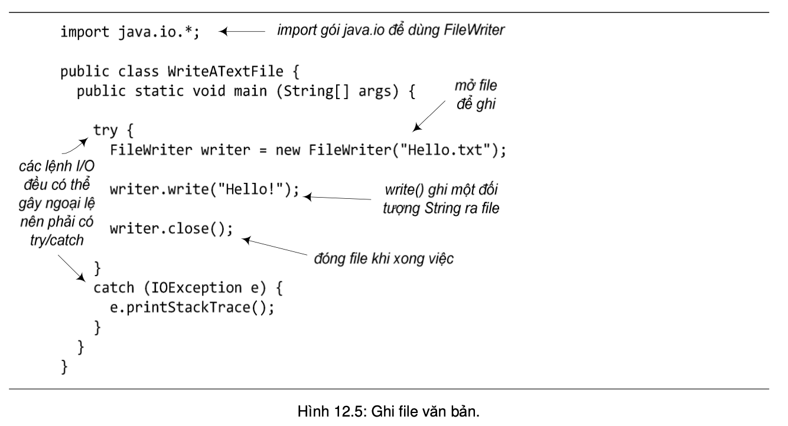

Sử dụng cơ chế chuỗi hóa cho việc lưu trữ đối tượng là cách dễ dàng nhất để lưu trữ và khôi phục dữ liệu giữa các lần chạy của một chương trình Java. Nhưng đôi khi, ta cũng cần lưu dữ liệu vào một file văn bản, chẳng hạn khi file đó để cho một chương trình khác (có thể không viết bằng Java) đọc.
Đối tượng thuộc lớp java.io.File đại diện cho một file hoặc một thư mục. Lớp này không có các tiện ích ghi đọc file, nhưng nó là đại diện an toàn cho file hơn là chuỗi kí tự tên file. Hầu hết các lớp lấy tên file làm tham số cho hàm khởi tạo, chẳng hạn FileWriter hay FileInputStream, cũng cung cấp hàm khởi tạo lấy một đối tượng File.
Với một đối tượng File, ta có thể làm một số việc hữu ích như:
File f = new File("foo.txt");File dir = new File("Books"); dir.mkdir();if (dir.isDirectory()) {
String[] dirContents = dir.list();
for (int i = 0; i < dirContents.length; i++)
System.out.println(dirContents[i]);
}System.out.println(dir.getAbsolutePath());boolean isDeleted = f.delete();Bộ nhớ đệm (buffer) cho ta một nơi lưu trữ tạm thời để tăng hiệu quả của thao tác đọc/ghi dữ liệu. Cách sử dụng BufferWriter như sau:BufferWriter writer = new BufferWriter(new FileWriter(aFile));
Sau lệnh trên thì ta chỉ cần làm việc với BufferWriter mà không cần để ý đến đối tượng FileWriter vừa tạo nữa.
Lợi ích của việc sử dụng BufferWriter được giải thích như sau: Nếu chỉ dùng FileWriter, mỗi lần ta yêu cầu FileWriter ghi một chuỗi dữ liệu nào đó, chuỗi đó lập tức được đổ vào file. Chi phí về thời gian xử lý cho mỗi lần ghi file là rất lớn so với chi phí cho các thao tác trong bộ nhớ. Khi nối một dòng BufferWriter với một FileWriter, BufferWriter sẽ giữ những gì ta ghi vào nó cho đến khi đầy. Chỉ khi bộ nhớ đệm BufferWriter đầy thì FileWriter mới được lệnh ghi dữ liệu ra đĩa. Như vậy, ta tăng được hiệu quả về mặt thời gian của việc ghi dữ liệu do giảm số lần ghi đĩa cứng. Nếu ta muốn đổ dữ liệu ra đĩa trước khi bộ nhớ đệm đầy, ta có thể gọi writer.flush() để lập tức xả toàn bộ nội dung trong bộ nhớ đệm.